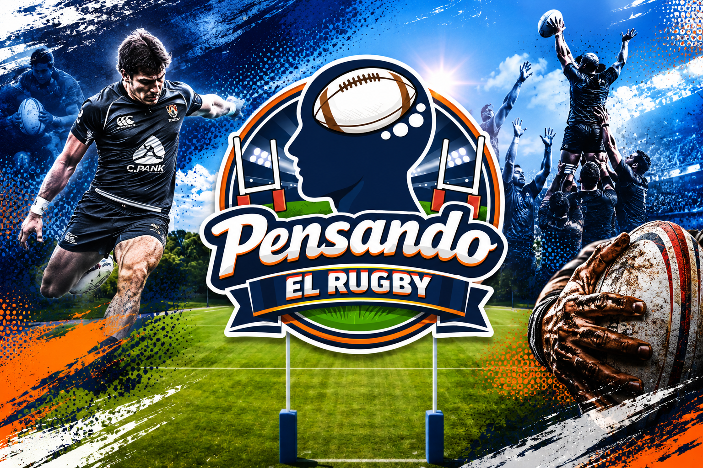

El espacio del rugby de Formosa y la región. Noticias, fixture, análisis y transmisión en vivo.
▶ Ver transmisiones en YouTubeCargando noticias automatizadas de rugby...
Próximos partidos y resultados de Formosa y la región.
📅 Fin de semana: Sábado 10 y Domingo 11 de Octubre de 2026
Primera - Fecha 15
Intermedia - Fecha 15
Primera - Fecha 6
Finales
Selección
Consejos, rutinas de gimnasio, preparación física y análisis táctico del juego.
Análisis de fases de juego, scrum y lineout.
Rutinas de fuerza y prevención de lesiones para jugadores.
Indumentaria, merchandising y productos de Pensando el Rugby.
Camisetas, buzos y gorras del programa.
Consultar por Mercado Pago / Pedidos
Sumate a nuestro programa semanal de análisis táctico y actualidad del rugby local e internacional.
Transmitimos en directo por nuestro canal oficial de YouTube.
▶ Suscribirme al canal en YouTube¿Quieres auspiciar en nuestro programa o publicar novedades de tu club?
📲 YouTube: @Rugby_BreackStream